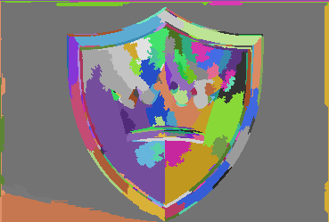
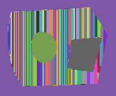

Complete geometry isolation Research result: NOT_ACCEPTED / NOT_ESTABLISHED. Architecture NOT_APPROVED. Both segmentation and initialization contribute. No candidate is a complete high-fidelity reconstruction.
Same-label comparisons use identical cracks and evaluator-only common face references. All 24 candidates remain visible. Colors below are arbitrary region IDs, not reconstructed appearance. Shield annotations have1.2–2px uncertainty and cannot certify the fixed1px gate. Known masks are sampled8× from independent vectors. Click images for actual SVGs.
Technical report · All metrics · Exact raw-label checks · Frozen protocol
A01_shield · G07_tux · G06_arabic · G05_chelsea_nativecrop · fine_features · K01_linear_corner_hole Failures first Case Condition Collapsed rings Invalid common rings Known IoU Status A01_shield S_A_F_A 131 153 no exactGT NOT_ACCEPTED A01_shield S_A_F_V 207 209 no exactGT NOT_ACCEPTED A01_shield S_V_F_A 0 6 no exactGT NOT_ACCEPTED A01_shield S_V_F_V 0 0 no exactGT NOT_ESTABLISHED_ALL_GATES_NOT_CERTIFIED G07_tux S_A_F_A 59 63 no exactGT NOT_ACCEPTED G07_tux S_A_F_V 66 67 no exactGT NOT_ACCEPTED G07_tux S_V_F_A 3 9 no exactGT NOT_ACCEPTED G07_tux S_V_F_V 4 5 no exactGT NOT_ACCEPTED G06_arabic S_A_F_A 69 78 no exactGT NOT_ACCEPTED G06_arabic S_A_F_V 85 86 no exactGT NOT_ACCEPTED G06_arabic S_V_F_A 65 67 no exactGT NOT_ACCEPTED G06_arabic S_V_F_V 81 81 no exactGT NOT_ACCEPTED G05_chelsea_nativecrop S_A_F_A 43 99 no exactGT NOT_ACCEPTED G05_chelsea_nativecrop S_A_F_V 201 220 no exactGT NOT_ACCEPTED G05_chelsea_nativecrop S_V_F_A 0 17 no exactGT NOT_ACCEPTED G05_chelsea_nativecrop S_V_F_V 1 2 no exactGT NOT_ACCEPTED fine_features S_A_F_A 3 4 0.8202 NOT_ACCEPTED fine_features S_A_F_V 4 5 0.7652 NOT_ACCEPTED fine_features S_V_F_A 21 34 0.8344 NOT_ACCEPTED fine_features S_V_F_V 33 33 0.8198 NOT_ACCEPTED K01_linear_corner_hole S_A_F_A 3 3 0.9507 NOT_ACCEPTED K01_linear_corner_hole S_A_F_V 3 3 0.9502 NOT_ACCEPTED K01_linear_corner_hole S_V_F_A 6 6 0.9912 NOT_ACCEPTED K01_linear_corner_hole S_V_F_V 9 9 0.9899 NOT_ACCEPTED
A01_shield Frozen working raster Saved high-fidelity pixel SVG reference S_A — frozen partition Segmentation labels, arbitrary colors Raw unit-crack graph S_A_F_A: 131 collapsed rings S_A_F_V: 207 collapsed rings S_V — frozen partition 
Segmentation labels, arbitrary colors Raw unit-crack graph S_V_F_A: 0 collapsed rings S_V_F_V: 0 collapsed rings True SVG detail renders —1× /4× /16× Source crop is raster guidance, not high-resolution vector truth. Geometry images are rendered from actual SVG viewports.
Native raster detail guide 1× actual SVG viewport S_A_F_A S_A_F_V S_V_F_A S_V_F_V 4× actual SVG viewport 16× actual SVG viewport Concrete fitting collapse: raw face10 The raw1px cell becomes a diagonal/zero-area shape. This demonstrates fitting damage; it does not make that cell desirable final artwork.
All13critical-component diagnostics and annotation roles
G07_tux Frozen working raster Saved high-fidelity pixel SVG reference S_A — frozen partition S_V — frozen partition True SVG detail renders —1× /4× /16× Source crop is raster guidance, not high-resolution vector truth. Geometry images are rendered from actual SVG viewports.
Native raster detail guide 1× actual SVG viewport S_A_F_A S_A_F_V S_V_F_A S_V_F_V 4× actual SVG viewport 16× actual SVG viewport G05_chelsea_nativecrop Frozen working raster Saved high-fidelity pixel SVG reference S_A — frozen partition S_V — frozen partition True SVG detail renders —1× /4× /16× Source crop is raster guidance, not high-resolution vector truth. Geometry images are rendered from actual SVG viewports.
Native raster detail guide 1× actual SVG viewport S_A_F_A S_A_F_V S_V_F_A S_V_F_V 4× actual SVG viewport 16× actual SVG viewport K01_linear_corner_hole Frozen working raster Saved high-fidelity pixel SVG reference S_A — frozen partition S_V — frozen partition 
Segmentation labels, arbitrary colors Raw unit-crack graph S_V_F_A: 6 collapsed rings S_V_F_V: 9 collapsed rings True SVG detail renders —1× /4× /16× Source crop is raster guidance, not high-resolution vector truth. Geometry images are rendered from actual SVG viewports.
Native raster detail guide 1× actual SVG viewport S_A_F_A S_A_F_V S_V_F_A S_V_F_V 4× actual SVG viewport S_A_F_A S_A_F_V S_V_F_A S_V_F_V 16× actual SVG viewport S_A_F_A S_A_F_V S_V_F_A S_V_F_V Independent known-vector mask errors Red=truth, green=candidate; yellow=agreement. Shape correspondence uses fixed source-only majority labeling. Topology counts use4-connectivity at8×.